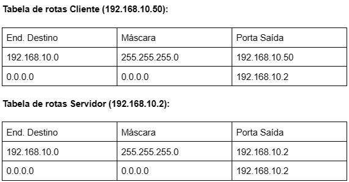
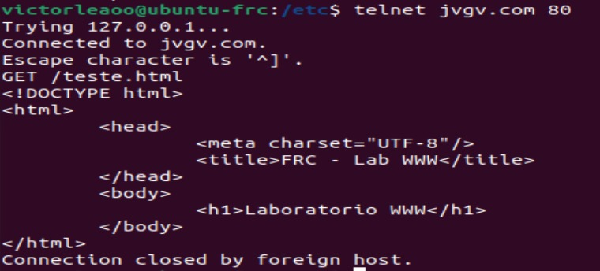

Regras de NAT
Configuração e regras de NAT:Resposta:
-
Resposta:
Configuração do servidor DHCP
Primeiramente, deve-se adicionar a rota para 255.255.255.255, uma vez que para que o dhcpd funcione
corretamente com clientes DHCP exigentes, ele deve ser capaz de enviar
pacotes com um endereço IP de destino de 255.255.255.255.
Para isso, digita-se: route add -host 255.255.255.255 dev eth0.
Opções para DHCPd
Agora configurar o DHCPd. Para fazer isso, é necessário editar /etc/dhcpd.conf.
Então distribuir ips, isso pode ser feito com as configurações a seguir:
# Sample /etc/dhcpd.conf
default-lease-time 600;
max-lease-time 7200;
option subnet-mask 255.255.255.0;
option broadcast-address 192.168.1.255;
option routers 192.168.1.254;
option domain-name-servers 192.168.1.1, 192.168.1.2;
option domain-name "mydomain.org";
subnet 192.168.1.0 netmask 255.255.255.0 {
range 192.168.1.10 192.168.1.100;
range 192.168.1.150 192.168.1.200;
}
Isso fará com que o servidor DHCP forneça ao cliente um endereço IP no intervalo
192.168.1.10-192.168.1.100 ou 192.168.1.150-192.168.1.200. Ele concederá um
endereço IP por 600 segundos se o cliente não solicitar um período de tempo específico. Caso
contrário, a concessão máxima (permitida) será de 7200 segundos. O servidor também "aconselhará" o
cliente a usar 255.255.255.0
como máscara de sub-rede, 192.168.1.255 como endereço de broadcast, 192.168.1.254 como
roteador/gateway e 192.168.1.1 e 192.168.1.2 como servidores DNS.
Iniciando o servidor
Há apenas uma coisa a fazer antes de iniciar o servidor. Na maioria dos casos, a instalação do DHCP
não cria arquivos dhcpd.leases. Este arquivo é usado pelo DHCPd para armazenar informações sobre
concessões atuais. Ele está no formato de texto simples para que você possa visualizá-lo durante a
operação do DHCPd. Para criar dhcpd.leases digite:
touch /var/state/dhcp/dhcpd.leases
Isso criará um arquivo vazio (tamanho do arquivo = 0). Algumas das versões mais antigas do dhcpd 2.0
colocaram
o arquivo em /etc/dhcpd.leases. Você não precisa fazer nenhuma alteração no arquivo leases, ele será
manipulado pelo dhcpd.
Se você receber uma mensagem dizendo que o arquivo existe, simplesmente ignore-o e vá para a próxima
etapa.
Agora é possível invocar o servidor DHCP.
/usr/sbin/dhcpd
Isso invocará o dhcpd no dispositivo eth0. Se você quiser invocá-lo em outro dispositivo, basta
fornecê-lo na linha de comando, por exemplo.
/usr/sbin/dhcpd eth1
Para verificar se tudo está funcionando bem, você deve primeiro ativar o modo de depuração e colocar
o servidor em primeiro plano. Você pode fazer isso digitando
/usr/sbin/dhcpd -d -f
Em seguida, inicialize um de seus clientes e verifique o console do seu servidor. Você verá várias
mensagens de depuração. Se tudo funcionar bem, você está pronto :-). Saia do dhcpd e inicie-o sem -d
-f e argumentos. Se você deseja que o dhcpd inicie na inicialização, inclua dhcpd em, por
exemplo,
/etc/rc.d/rc.local
Resposta:
O problema é que com dois DHCPs na mesma rede fisica as estações e outros dispositivos ficam se
perdendo, não sabe à qual rede pertencem e acabam entrando ora na REDE A, ora na REDE B.
Resposta:
O comando dnsdomainname mostra a parte do nome de domínio dns do sistema do FQDN (Fully Qualified
Domain Name), ou seja, o nome de domínio do host local. Significa o
endereço IP convertido em um nome de domínio. Provavelmente, só aparecerá algo com esse comando se
um servidor web estiver rodando no computador.
Resposta:
Localhost se refere ao computador que está executando um programa. O computador funciona como se
fosse um servidor virtual.
Como qualquer outro nome de domínio, o localhost também tem um endereço de IP. O endereço varia de
127.0.0.0 a 127.255.255.255. Mas, normalmente, é 127.0.0.1. Tentar abrir o
IP 127.0.0.1 em uma conexão IPv4 vai resultar em um loopback. Você também consegue fazer um loopback
em uma conexão IPv6 digitando :1.
Esse endereço possui três vantagens:
Teste de Velocidade: Como um administrador de redes, você vai querer que todos os seus equipamentos e o TCP/IP estejam em plenas condições de uso. Você pode fazer um teste de conexão fazendo um ping para o Localhost. Se você usa o Windows, por exemplo, você abrir um comando prompt e digitar ping localhost ou ping 127.0.0.1. O teste vai mostrar o quão bem tudo é executado. E você pode fazer correções imediatamente caso encontre algum problema.
Teste de Programa ou Aplicação Web: Contatar o Localhost também serve ao propósito de desenvolvedores. Especialmente se eles estão criando aplicações para web ou programas que exigem conexão com a internet. Se você ainda se lembra, seu sistema operacional se torna um servidor simulado assim que o loopback é acionado. Além disso, você pode carregar os arquivos que precisar de um programa em um servidor e checar se tudo está funcionando. Bloqueio de Sites: Existe um outro truque bacana que você pode fazer usando o loopback: bloquear sites que não quer acessar. O loopback é bem útil se você quer impedir que seu navegador acesse sites maliciosos ou suspeitos. Porém, antes de aprender como isso funciona, você precisa saber qual é o host file em questão e o papel dele nesse contexto. Como você já sabe, todos os sites têm um endereço de IP. Você consegue acessar um site porque o DNS (Domain Name System) procura pelo endereço de IP apropriado no qual um site está registrado. O seu computador ajuda a melhorar esse processo armazenando o arquivo do host para cada site que você visita. Este arquivo contém o IP e o nome de domínio de um site. Você pode mudar o endereço de IP para 127.0.0.1 e o site que contém o arquivo host que você modificou vai redirecionar você para um localhost. Um exemplo disso pode ser um admin de um computador de uma empresa bloquear acesso a um site.
Resposta:
Um Nome de Domínio Totalmente Qualificado (FQDN na sigla em inglês), ou nome de domínio absoluto,
representa uma parte da URL de um site. Como o nome sugere, trata-se do nome completo de uma
entidade presente ou ligada à internet, incluindo servidores de aplicações web e computadores.
Ele especifica todos os níveis de domínio contidos no formato hostname.dominio.tld: hostname pode
ser explicado como a “etiqueta” de um servidor disponível em uma rede, por exemplo, www; domínio
seria a conversão que o DNS fez do IP; tld é o domínio de topo que indica a extensão do endereço.
O FQDN é muito utilizado em qualquer interação na internet, já que são mais fáceis de memorizar que
um endereço IP.
Resposta:
Sim é possível usar 2 servidores DNS na mesma rede, mas deve-se seguir a configuração de DNS
primário e secundário. Esse funcionamento acontece, de forma básica, assim: ao tentar se conectar em
um site, o sistema tentará primeiro converter a URL amigável digitada num endereço IP no servidor
DNS primário. Caso o servidor não esteja funcionando, ele tenta o DNS secundário.
Os servidores primários de DNS contêm todos os registros de recursos relevantes e administram as
consultas DNS para um domínio. Por outro lado, os servidores secundários de DNS contêm cópias de
arquivos de zona somente para leitura, o que significa que não podem ser modificados. Assim, você
usa dois servidores DNS apenas como redundância, uma segurança a mais. No caso de um deles falhar,
há o secundário, que pode evitar que você fique sem acesso.
Resposta:
Uma consulta de DNS reversa é uma consulta de DNS para o nome de domínio associado a um determinado
endereço de IP. Nesse caso se faz o oposto da pesquisa de DNS de encaminhamento mais comumente
usada, em que se consulta o sistema de DNS para que este retorne um endereço de IP.
As pesquisas de DNS consultam os servidores de DNS para obter um registro PTR (ponteiro) que
armazenam endereços IP com seus segmentos invertidos.
Um exemplo de implementação pode ser visto no arquivo db.avengers.:
@ IN SOA ironman.avengers.unb.br. root.vader.starwars.unb.br. (2022092601
21600 1800 604800 86400 )
IN NS ironman.avengers.unb.br.
1 IN PTR spiderman.avengers.unb.br
2 IN PTR hulk.avengers.unb.br
3 IN PTR wanda.avengers.unb.br
4 IN PTR antman.avengers.unb.br
Resposta:
Um registro de DNS de "troca de e-mails" (MX) direciona o e-mail para um servidor de e-mail. O
registro MX indica como as mensagens de e-mail devem ser encaminhadas de acordo com o Protocolo de
Transferência de Correio Simples (SMTP, o protocolo padrão para todos os e-mails). Da mesma forma
que nos registros CNAME , um registro MX deve sempre apontar para outro domínio.
Podem haver mais de uma, mas é altamente recomendado manter-se atento aos valores de prioridade
definidos.
Resposta:
Um DNS autoritativo tem um mecanismo de atualização usado para gerenciar os DNS públicos. Esses
tipos de serviço têm a capacidade de trazer informações para um domínio por causa de sua autoridade,
ou seja, ele controla as zonas ao definir um IP e um servidor.
Uma resposta DNS autorizada é aquela em que o DNS autoritativo foi acionado. Como ele busca as
informações da busca do usuário diretamente no endereço IP, tem as informações mais atualizadas. São
necessárias as seguintes características para uma resposta ser considerada como autorizada: SOA
(início de autoridade); Ficha (lista o servidor validade e atualizado); Registros (correspondências
entre os servidores de domínio e aqueles listados no registro SOA).
Resposta:
Trata-se de um servidor de nomes que não tem autoridade sobre qualquer zona. Ele obtém toda as
informações a ele requisitadas à partir de servidores primários ou secundários. Esse tipo de
servidor requer pelo meno um registro de servidor de nome (NS-Name Server Record) para apontar para
um servidor de nomes a partir do qual ele pode inicialmente obter informações.
Resposta:
-
Resposta:
Ambos são uma família de formatos de arquivo relacionados usado para armazenar coleções de mensagens
de email.
A diferença vem no suporte opcional a Maildir permite um único arquivo por email (usando o formato
de dados EML), diferente do formato padrão
de arquivo único monolítico de um arquivo por pasta denominado mbox.
Resposta:
Imple Authentication and Security Layer (SASL) é uma estrutura para autenticação e segurança de
dados em protocolos de internet. A partir da
versão 10.9, o ArcGIS Enterprise suporta o uso de SASL como meio de autenticação comWindows Active
Directory ou outro provedor LDAP usando o
mecanismo GSS/Kerberos v5 SASL.
A autenticação SASL GSS é normalmente usada quando o controlador de domínio de uma organização é
configurado para exigir assinatura para autenticação
com o servidor LDAP. Este requisito se aplica apenas ao conectar no servidor LDAP nas portas 389 ou
3268 sem criptografia. Se LDAPS forem totalmente
suportados com todos os controladores de domínio, esse requisito de assinatura não será necessário.
Resposta:
Protocolos de E-Mail
E-mail (Electronic Mail - Correio Electrónico) é provavelmente a aplicação TCP/IP mais utilizada. Os
Protocolos básicos proporcionam a troca de mail (notas) e mensagens entre hospedeiros TCP/IP; foram
adicionados serviços para a transmissão de dados que não podem ser representados como texto ASCII de
7-bit. Existem três protocolos standard que se aplicam a este tipo de mail. O termo SMTP é
frequentemente usado para o conjunto dos três, uma vez que estes estão inter-relaccionados, no
entanto SMTP é apenas um dos protocolos.
Normalmente, no contexto, torna-se evidente qual dos três protocolos está a ser referido. No entanto
podem ser levantadas dúvidas, assim, para que a ambiguidade seja evitada serão referidos os números
STD e RFC.
Os três standards são os seguintes:
SMTP (Simple Mail Transfer Protocol) - Standard para a troca de mail entre dois computadores
(STD10/RFC821), que especifica o protocolo usado para enviar mail entre hospedeiros TCP/IP.
Standard (STD11) para o formato das mensagens de mail, contido em dois RFCs. O RFC 822 que descreve
a sintaxe dos campos de cabeçalho do mail e define um conjunto de campos de cabeçalho e a respectiva
interpretação; e o RFC 1049 que descreve a forma como um conjunto de tipos de documentos (para além
de texto simples ASCII) podem ser usados no corpo do mail. O nome oficial do protocolo para este
standard é MAIL.
Standard para o trajecto do mail usando o sistema de "DomainName", descrito no RFC 974. O nome
oficial do protocolo para este standard é DNS-MX.
STD10/RFC821 dita que os dados enviados via SMTP são dados ASCII-7bit, com o bit de maior ordem a
zero. Esta situação adequa-se à maioria dos casos para transmissão de mensagens de texto em Inglês,
mas é inadequada tratando-se de texto com caracteres de diferentes línguas ou de dados que não sejam
texto.
Existem duas abordagens para ultrapassar estas limitações (trata-se mais propriamente de duas
abordagens complementares do que de standards concorrentes), que são as seguintes:
MIME (Multipurpose Internet Mail Extensions), definido nos RFCs 2045 a 2049, que especificam o
mecanismo de conversão de texto e dados binários em ASCII, dentro do envelope de mail definido por
RFC 822.
SMTP Service Extensions, que define o mecanismo de extensão das capacidades do SMTP para além das
limitações impostas pelo RFC 821. Algumas implementações de SMTP podem debater-se com problemas
quando as mensagens têm mais do que 64KB; também podem existir problemas quando o cliente e o
servidor SMTP têm "timeouts" diferentes; outro problema pode ser um "loop" infinito na entrega do
mail quando duas "mailing lists" se referem uma à outra e a mensagem é enviada a ambas.
Resposta: Resposta:
Conecte ao servidor utilizando telnet:
# telnet mail.JVGV.com 25
Trying 192.168.1.14...
Connected to mail.JVGV.com.
Escape character is '^]'.
220 mail.JVGV.com ESMTP Postfix (Debian/GNU)
Assim, está conectado ao servidor de e-mail.
Veja a seguinte lista de comandos para confirmar que a entrega de e-mails está
realmente funcionando:
HELO mail.JVGV.com - inicia a conversa com o servidor de e-mails mail.example.com
e a partir deste momento o servidor reconhecerá este cliente.
MAIL FROM: admin@JVGV.com - informa quem estará enviando o e-mail. O e-mail deve
existir (dependendo da sua configuração).
RCPT TO: victoorleao@gmail.com - informa quem estará recebendo este e-mail.
DATA - escreva a mensagem e pressione . (ponto) para finalizar e adicionar o
e-mail à fila.
quit - este comando sairá da linha de comando do telnet.
Adicionamos um e-mail à fila de e-mails do servidor, este e-mail será enviado para
victoorleao@gmail.com com remetente admin@example.com e o conteúdo digitado em DATA. Observe a saída
abaixo:
# telnet mail.JVGV.com 25
Trying 192.168.1.14...
Connected to mail.JVGV.com.
Escape character is '^]'.
220 mail.JVGV.com ESMTP Postfix (Debian/GNU)
MAIL FROM: admin@JVGV.com
250 2.1.0 Ok
RCPT TO: victoorleao@gmail.com
250 2.1.5 Ok
DATA
354 End data with
Hello, this is a test
.
250 2.0.0 Ok: queued as 651E650DCD06
quit
221 2.0.0 Bye
Connection closed by foreign host.
Todos os comandos digitados retornaram uma mensagem com o código 250, significando
sucesso.
Com o programa telnet e utilizando a porta certa você consegue acessar sua conta
de email pop3:
$ telnet pop.provedor.com.br 110
Onde:
telnet = programa.
pop.provedor.com.br = seu provedor (ex:
pop.bol.com.br...).
110 = porta do protocolo POP.
Para logar na sua conta, use os comandos user e pass. Supondo que seu login seja
joao e senha tabajara, a seqüencia ficaria assim:
$ telnet pop.provedor.com.br 110
Escape character is '^]'.
+OK ready
user victoorleao
+OK Password required for victoorleao.
pass tabajara
Em seguida usaremos os comandos list, retr e dele para, respectivamente, lista,
ler e deletar as mensagens. Continuando na conexão assim, nossa seqüencia para
listar as mensagens, ler a mensagem 1 e em seguida apagá-la seria:
list
+OK 2 visible messages (xxxx octets)
1 1212
2 1624
.
retr 1
+OK 1212 octets
... < fonte da mensagem aqui>
.
dele 1
+OK Message 1 has been deleted.
quit
Resposta: 1– Abra o terminal e instale o Apache no servidor ou máquina local. $ sudo apt update $ sudo upgrade $ sudo apt install Apache2 2- Verificar a versão e status do Servidor: $ apache2 -v $ sudo systemctl status apache2 3- Habilitar apache no boot. $ sudo systemctl enable apache2 4- Ajustar firewall para permitir conexões do Apache nas portas 80 e 443. $ sudo ufw allow in “Apache Full” 5- Verificar os IPs do Servidor localhost para entrar no navegador: $ hostname -I Como resposta teremos: IP 192.168.1.201 6- Alterar a ordem de precedência, para o Apache ler primeiro o arquivo index.php antes de index.html. $ sudo nano /etc/apache2/mods-enabled/dir.conf Passos para Hospedar os Sites no Servidor 1 - Criar Diretório: $ sudo mkdir -p /var/www/JVGV.com/public_html 2- Definir os usuários logados como sendo proprietários dos diretórios e dos subdiretórios em seus respectivos domínios: $ sudo chown -R $USER:$USER /var/www/JVGV.com/public_html 3- Definir as permissões de acesso para leitura, escrita e execução para os usuários em suas repectivas categorias, para os diretórios e arquivos: $ sudo chmod -R 775 /var/www 4- Criar os aquivos de configuração de cada site no diretório sites-available: $ sudo nano /etc/apache2/sites-available/JVGV.com.conf ServerAdmin JVGV@gmail.com ServerName JVGV.com ServerAlias www.JVGV.com DocumentRoot /var/www/JVGV.com/public_html ErrorLog ${APACHE_LOG_DIR}/error.log CustomLog ${APACHE_LOG_DIR}/access.log combined Teclar Ctrl o; Enter; Ctrl x para salvar e sair. 5- Habilitar os arquivos de configuração dos domínios dos sites, i.e, dos hosts virtuais: $ sudo a2ensite JVGV.com.conf 6- Desabilitar o site padrão localhost $ sudo a2dissite 000-default.conf 7-Verificar se tudo foi digitado de forma correta nas configurações do Apache $ apache2ctl configtest 8- Apontar IP do Servidor onde estão hospedados os Domínios Na máquina cliente informar o endereço IP onde estão armazenados os domínios dos sites, virtual host, para ver as páginas dos mesmos pelo navegador. (192.168.1.201) Editar o arquivo hosts que se localiza em /etc. $ sudo nano /etc/hosts 9- Criar uma página de internet no Servidor - index.html 9.1 - Site do grupo A página ficará hospedada em /var/www/JVGV.com/public_html. 10- Recarregar o Apache para as configurações e alterações sejam estabelecidas. $ sudo systemctl reload apache2
Resposta: Pode ser visto no item 3 da questão anterior, que define as permissões de acesso para leitura, escrita e execução para os usuários em suas repectivas categorias, para os diretórios e arquivos: $ sudo chmod -R 775 /var/www Mas também pode ser feito através de: $ sudo chmod 2750 /root $ sudo chmod 2750 /home/usuario
Resposta: Pode ser visto no item 3 da questão anterior, que define as permissões de acesso para leitura, escrita e execução para os usuários em suas repectivas categorias, para os diretórios e arquivos: $ sudo chmod -R 775 /var/www Mas também pode ser feito através de: $ sudo chmod 2750 /root $ sudo chmod 2750 /home/usuario
Resposta: Um server-side include é um tipo de diretiva que é colocada em uma página web pelo servidor antes que a página seja enviada ao cliente. Esta diretiva diz ao servidor para inserir um arquivo específico no local onde a diretiva é encontrada. O tipo mais comum de server-side include é o virtual include, que diz ao servidor para inserir o conteúdo de outro arquivo no arquivo atual. Os includes do lado do servidor podem ser usados para inserir o conteúdo de um arquivo em outro, para incluir cabeçalhos e rodapés padrão em cada página de um site, ou para inserir conteúdo dinâmico em uma página, tal como a data ou hora atual. Como eu adiciono SSI? Para adicionar SSI às suas páginas web, você precisará editar o código HTML das suas páginas e adicionar as diretivas SSI onde você deseja que os includes do lado do servidor sejam processados. As diretrizes devem ser adicionadas dentro dos comentários HTML, e elas devem começar com .
Resposta: Para gerenciar conexões simultâneas, o apache faz uso da memória RAM, alocando certa quantidade para cada conexão existente. É possível configurar o apache para receber mais conexões simultâneas que o padrão. Para isso, é importante saber a média de consumo de cada uma dessas conexões, assim, dividindo a quantidade total de RAM do computador pela quantidade de RAM que uma conexão usa, sabe-se a quantidade máxima de conexões simultâneas que um computador com apache pode suportar. Assim, no arquivo apache2.conf (configuração do servidor apache), há um parâmetro MaxClients, que pode ser modificado para garantir mais conexões simultâneas.
Resposta: O servidor de proxy é uma máquina colocada entre os computadores da rede e a internet. Esse servidor é utilizado, principalmente, com basicamente dois objetivos: melhorar o desempenho do acesso através de um cache de páginas; e bloquear acesso a determinadas páginas. Na função de aceleração, o proxy armazena as páginas e arquivos mais acessados na WEB pelos usuários da rede interna. Assim, quando um usuário acessa determinadas páginas, elas ficam armazenadas no proxy. Quando outro usuário solicitar a internet, uma das páginas já armazenadas do cache, o proxy envia para o computador a página já armazenada de forma rápida. Com o uso do proxy, economiza-se tempo, pois a página é carregada de forma rápida e não ocupa a banda de internet da empresa buscando os mesmos dados. O uso de servidor proxy acelera o carregamento das páginas de internet mais acessadas e preserva a banda da empresa. Esse processo também pode ser implementado para os downloads, principalmente os de atualizações de programas como o antivírus e o Windows. Sem o proxy, todos os computadores da rede deveriam atualizar uma nova versão do antivírus, baixando, cada um, o novo banco de dados, congestionando a internet toda vez que é lançado um bando de dados de atualização novo, o que ocorre com muita frequência. Com o proxy, ele será baixado somente uma vez, pois os outros computadores irão buscar o arquivo diretamente no servidor proxy. Dentre os principais usos do servidor de proxy, um dos grandes atrativos, além da economia do uso do acesso à internet, é a restrição do acesso à internet.
Resposta: A relação se dá no envio das páginas, já que toda vez que o navegador chama uma página, o servidor web envia “cabeçalhos(headers)” antes de enviar a marcação de página em si. A parte mais importante do cabeçalho é chamada de Content-Type, ou “MIME type” da página.
Resposta: A imagem abaixo mostra um exemplo de uma conexão telnet usando o comando do protocolo GET, visualizando a página. 
Assim como o primeiro projeto, mais uma vez eu acredito que o desenvolvimento do trabalho foi desafiador, especialmente por conta do tempo e da distribuição da matéria nas aulas, especialmente por ela ser muito densa. Apesar das adversidades, fui capaz de contribuir especialmente para a conexão do servidor web, especialmente relacionadas as perguntas de 1 a 6, todas relacionadas a subir o servidor e configura-lo com restrições e domínios, e em DHCP, com a instalação, configuração, análise de tráfego e principalmente na distribuição dinâmica de ips, mas por meio das intensas pesquisas, o SMTP e DNS também tiveram minha efetiva participação.
Indubitavelmente, esse projeto, assim como os anteriores, foi muito desafiador para mim e para o time, acredito que para a turma como um todo também. Nesse contexto, dada as aulas de conteúdo que foram perdidas, tivemos dificuldades no projeto como um todo, tivemos que pesquisar bastante e dedicar muito tempo para que fosse possível elaborar esses relatórios e tentar atender, da melhor maneira possível o que foi solicitado pelo o professor. Portanto, eu considero que a minha maior contribuição para com o meu time foi a elaboração dos arquivos html, css, bem como no relatório de DHCP E SMTP, a fim de responder as perguntas que estão a cima.
Na minha opinião, o desenvolvimento deste trabalho precisou de bastante esforço para poder realizá-lo, necessitando de bastante pesquisa para compreensão do conteúdo. Porém acredito que tivemos maior orientação do professor no desenvolvimento dessa entrega, quando comparado ao primeiro projeto que realizamos, com mais oportunidades para tirarmos dúvidas na aula e mais tempo para executarmos nas aulas de laboratório. Acredito que as minhas maiores contribuições para o desenvolvimento do trabalho foram o desenvolvimento do mapa de rede e colaboração no desenvolvimento das respostas para as questões nos relatórios, além da colaboração nas configurações do servidor nas aulas de laboratório.
Inicialmente, apontando as dificuldades encontradas para o desenvolvimento do experimento, posso destacar que a alta carga de atividades, em conjunto com um semestre atípico (recesso, aulas perdidas por causa de jogos de copa, feriados, entre outros) com poucas aulas efetivas para realização dos experimentos com focos de dúvidas para todos os grupos de forma consistente, fez com que o grupo tivesse problemas na realização da tarefa como um todo. Encontramos dificuldades, também, na reunião dos membros fora das aulas para testar e efetuar os experimentos para validar e ter uma maior eficiência. Como participação no projeto, posso destacar que tentei executar os serviços, aqueles que possíveis, na minha máquina pessoal, instalando um servidor Ubuntu como máquina virtual, por exemplo, o serviço Web. Também atuei com o grupo no laboratório para tentarmos implementar os serviços restantes. Tive participação na criação das páginas web, com seus relatórios específicos. Por fim, como opinião pessoal, digo que o experimento tem um ótimo propósito, fazendo com que os alunos pudessem ter uma compreensão interessante dos serviços da camada de rede, porém, o tempo em comparação com a quantidade de atividades que tais serviços demandam, impactaram negativamente no desenvolvimento com sucesso. Assim, acho que, o experimento foi bem sucedido em entendimento, mas não, talvez, na prática.